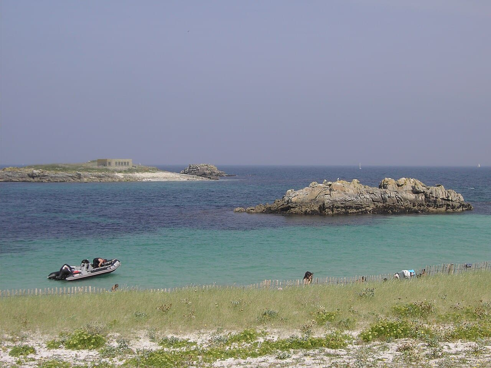

Archipel des Glénan
Finistère, France · paddle, kayak, snorkeling, baignade

Petit archipel breton aux eaux translucides surnommé 'les Caraïbes bretonnes' : paddle, snorkeling et baignade.
- Lieu
- Finistère, France
- Niveau
- Débutant
- Activités
- paddle, kayak, snorkeling, baignade
- Type d'eau
- Mer / océan
- Coordonnées
- 47.72, -3.99 (position approximative du secteur)
Dangers à connaître
- Courants entre les îlots.
- Accès en bateau seulement.
Le conseil d'Ocean Buddy
Vérifie l'horaire des navettes pour le retour.
Ouvrir dans Ocean Buddy Télécharger sur l'App Store
Source : Description historique Ocean Buddy · vérification externe en attente.